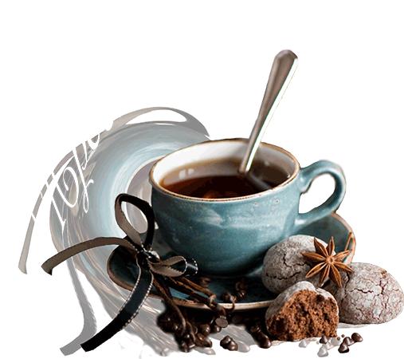

Перед тим як захопити світ, захопи кавуGood Cofee

|  |
Перед тим як захопити світ, захопи кавуGood Cofee |
|
| Назва | Вихід (мл) | Ціна (грн) | |
|---|---|---|---|

|
Кава з прянощами (кардамоном, корицею, цедрою цитрусових) | 120/40/10 | 49,00 |
| Кава по-мексиканськи (з мускатним горіхом, корицею) | 120/40/10 | 49,00 | |
| Кава по-новозеландському (з цукром) | 120/40/10 | 43,00 | |
| Кава по-румунськи (з какао і ваніллю) | 120/40/10 | 43,00 | |
| Кава з кардамоном | 120/40/10 | 43,00 |
| Cирний десерт(козячий сир фран., оповитий чорним шоколадом) | 30 | 55,00 |

|
| Мюссе(прохолодний, ніжний десерт в скляній формочке) | 50 | 49,00 | |
| Лимонний рулет (вибух свіжості під хрусткою скоринкою) | 100 | 57,00 | |
| Сирна запіканка | 100 | 49,00 | |
| Кокосові корали (ніжні, хрусткі кокосові меренги) | 50 | 25,00 |